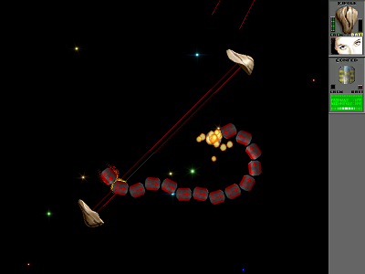

|  |
Star Control TimeWarp is an open source clone/sequel to the epic cross-genre game Star Control II. Currently it includes only a combat portion, although there are some plans to expand it to include an epic adventure. The plot of such an adventure would not have anything to do with the name "TimeWarp". Star Control: Timewarp is often affectionately called TW. TimeWarp is written in portable C++ and is known to compile and run on Linux, Mac OSX and Windows (with the exception that it is still not 64-bit clean as nobody of us has access to such hardware) |
More detailed information about the game:
english readme,
Subscribe to our mailing lists if you want to always know the latest news about TimeWarp.
| Sat 28 Feb 2004 |
TimeWarp is developed by a group of Star Control fans. Though the game is quite playable
now, it is far from being complete. The development of this game is still going
on. Please note, that this is a real project, not just a collection of
plans, ideas and dreams like in some other places in the net.
Things may seem to change slow, but there is real progress and every new version
is (we hope ;-) better than previous one. Anyway it is better to have a working
game than lots of ideas, but no code at all. All the work is done in our spare
time, so don't expect that your nice suggestion will be implemented in a short
time. If you are badly missing some feature and think that you can make it
youself, your patch will be welcome (if it does not break all the rest ;-)
You can support the project by participating discussion in
TimeWarp forum,
where you can post suggestions for future development or just any questions about TimeWarp.
You can support the project by posting bugreports and patches in
TimeWarp Bugzilla
Following documents describes some of the issues concerning contributing to Timewarp
TimeWarp resources
other Star Control inspired game projects in development
this page is hosted by
{kind=link}